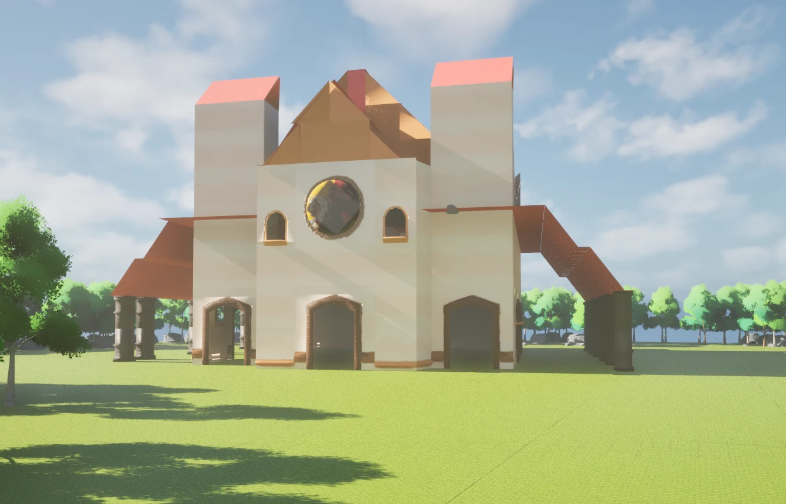
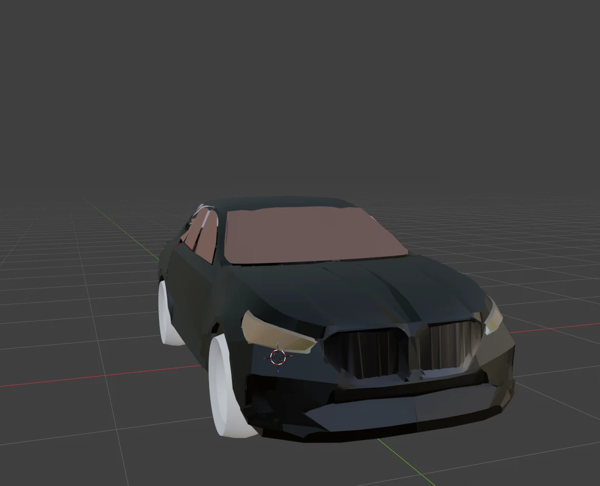
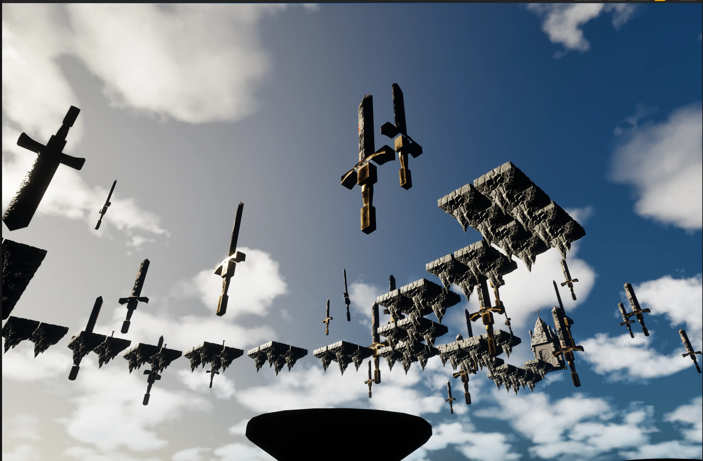
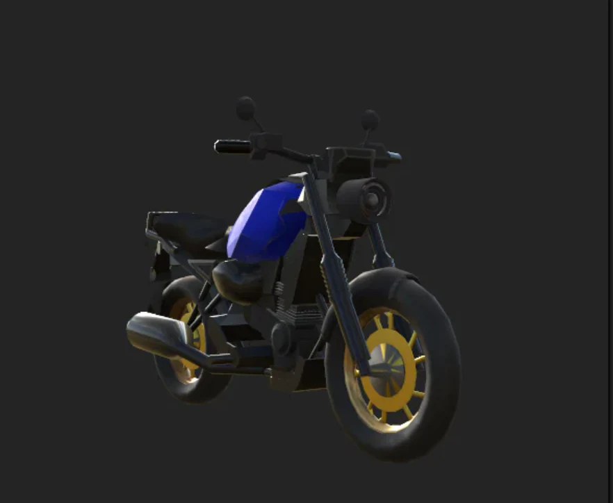
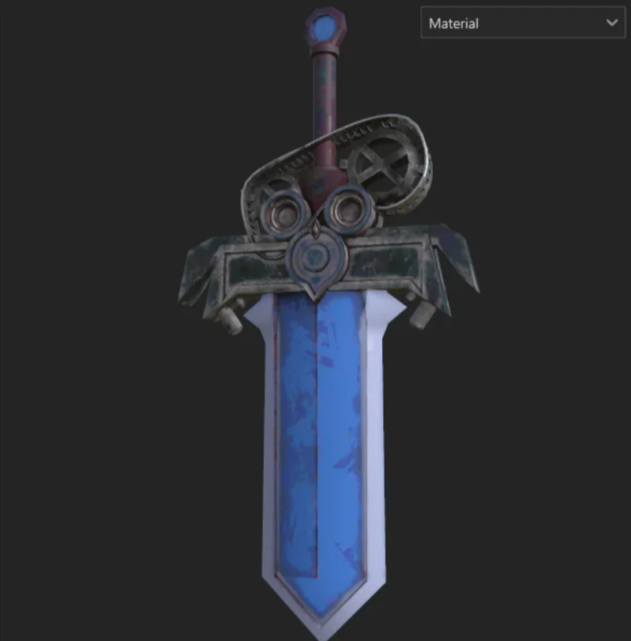
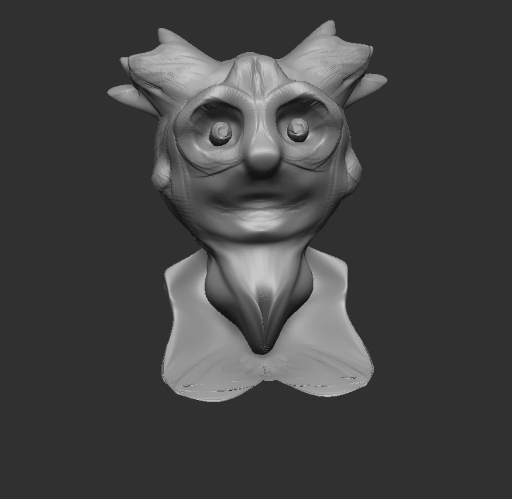
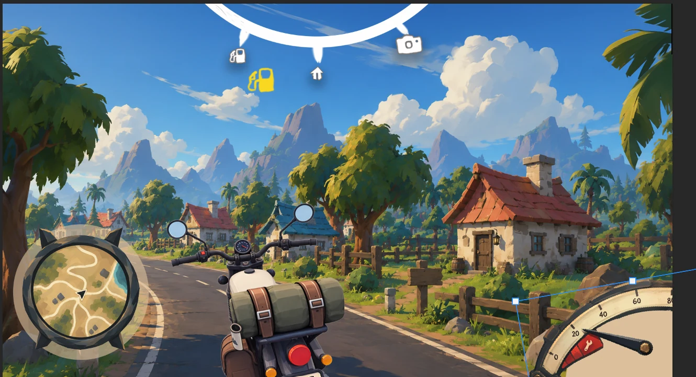
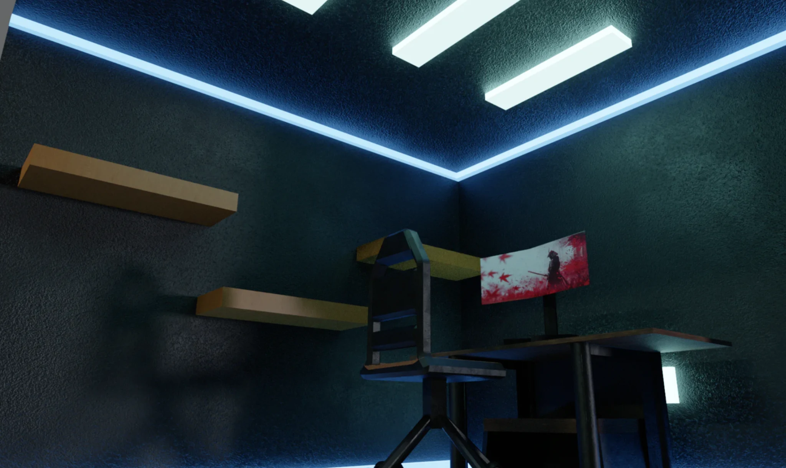

A CURATED COLLECTION
SELECTED
WORKS.
A mix of environments, props, vehicles, character art and gameplay experiments — each one a step in the process of becoming a better game artist.
AND COUNTING

↗Modular Church Environment
Architectural environment built from reusable modular assets.

↗BMW 5 Series G60
Hard-surface vehicle modelling study.

↗IMPALE
A platform obstacle prototype with falling nails and destructible floors.

↗Yamaha FZ-X
Low-poly motorcycle asset modelled for a game art portfolio.

↗Stylized Prop Collection
A collection of low-poly stylized props and fantasy weapons.
Character Design & Illustration
Anime-inspired character illustration and cartoon character lineup.

↗3D Sculpting Studies
Stylized characters, creatures and hard-surface sculpting exercises.

↗Motorcycle Game HUD
Adventure-inspired interface for a stylized bike exploration game.

↗Interior Level Environment
Atmospheric interior environment created as a second-year project.
No projects in this category yet.
HAVE A PROJECT IN MIND?